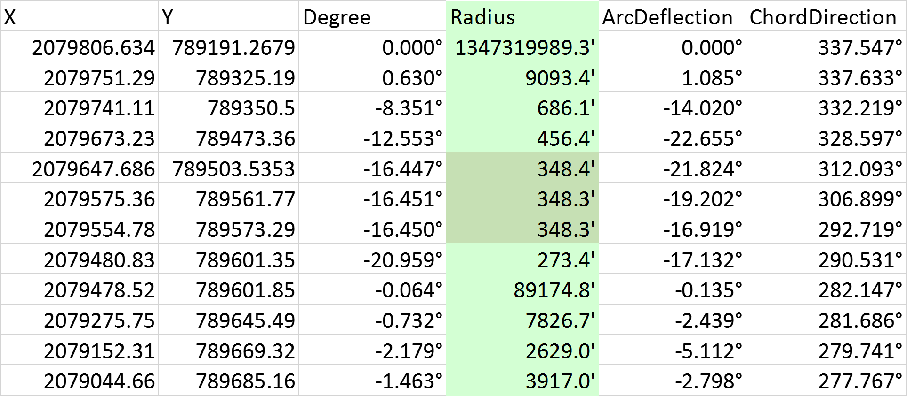

As explained at https://courses.ncsu.edu/nr595d/common/index.html,
This course explains principles, syntax, and language elements associated with creating and running computer programming scripts. Python scripting is used to efficiently run ArcGIS tools, read text files of data and ArcGIS attribute tables, interact with map elements, manipulate batches of GIS data, and create basic user interfaces. Assignments are preformed in Python, ArcGIS, and PythonWin. Teaching techniques incorporate hands-on learning in a stimulating, interactive classroom environment. Students completing this course will be armed to streamline GIS work-flow and build reusable applications.
| Semester | Role |
| Spring 2016 | Student |
Fall 2016, |
Teaching Assistant |
This project was presentat at the NC GIS 2017 Conference: Get The Kinks Out Determining Roadway Radii From PolyLines
The problem: When an agency such as NCDOT represents existing roadways in GIS, they use Polyline feature classes which are only sequences of line segements. Although the actual roadways have curves of specific radius (thus curvature), this information is not available in the feature classes because there are no curve elements, only lines.
The solution: This tool computes the small arcs formed by each point triplet, and writes out the Degree of Curve and the Radius of each of these arc segments to a csv file.
The RoadGeometry.py file (and associated files) read polylines, extracting the point data from them, writing a csv file which contains the Degree of Curve, Radius, and Direction at each point along the polyline. Optionally, as a check to verify the integrity of the extracted point data, the points may be loaded back into the map as a new polyline file.
The output, a csv file, shows the Degree of Curve, the Radius, and other information about each arc segment. Here is a sample of a report from a run on Leesville Road in Raleigh, NC, near Sycamore Creek Elementary School.

Here is the same location in which the radiuses are depicted as purple lines. Note how the radiuses alternate between left and right when in a roadway tangent (a straight away), and they converge to approximately the same center point at the curve, which seems to have a radius of 348.3 feet.